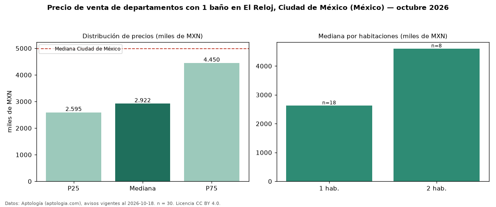

Precio de venta de departamentos con 1 baño en El Reloj, Ciudad de México (México) — octubre 2026
En El Reloj, Ciudad de México (México), la mediana de precio de venta de departamentos con 1 baño es MXN 2,92 millones, según 30 avisos vigentes. Eso es 35 % menos que la mediana de todos los departamentos en venta de El Reloj (MXN 4,48 millones, n = 59); este segmento reúne el 51 % de esos avisos. Por metro cuadrado, la mediana es MXN 67.409/m² (n = 30), 3 % por encima del conjunto de referencia (MXN 65.430/m²). El área mediana anunciada es 47 m². El segmento con más oferta es el de 1 habitación (18 avisos, mediana MXN 2,63 millones); pasar de 1 habitación a 2 habitaciones cambia la mediana +75 %. La mitad central de los avisos va de MXN 2,59 millones a MXN 4,45 millones (razón 1,7), una dispersión moderada. La mediana de todos los departamentos en venta de Ciudad de México es MXN 4,99 millones (−41 % de diferencia). Datos: Aptología (aptologia.com), CC BY 4.0 — https://www.aptologia.com/. Archivos: PDF, CSV con las cifras y gráfica PNG.

| Avisos únicos | 30 |
|---|---|
| Percentil 25 | COP 2.594.948 |
| Mediana | COP 2.921.940 |
| Percentil 75 | COP 4.450.162 |
| Mediana por m² | COP 67.408 |
Fuente: avisos vigentes de portales inmobiliarios recopilados por Aptología, deduplicados (mínimo 30 avisos únicos por celda). Precios pedidos, no cerrados. Fecha: 2026-10-18.